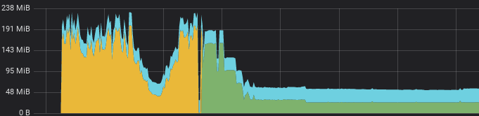

A kubernetes failure story (#1)
k8s meetup at NMBRS

# whoami
- Pieter Lange
- IT infrastructure technician
- p.lange@fullstaq.com
- github.com/pieterlange
- eat, sleep, , repeat


k8s.af
The setting
Kubernetes authentication
- Dex
- OIDC "proxy"
- Storage backends
Config
config:
storage:
type: kubernetes
config:
inCluster: true
The problem
Bad defaults
- AKA "stop hitting yourself"
- Insane TTL
- Refreshing dashboards
- Actual security bug
I got these hints earlier..
Now i got $x AuthRequests
- How TF do i clean this up?!
- Listing all authrequests times out
- Kinda need that to delete the resources
What would you do?
- Tweak timeouts in etcd/apiserver
- Delete namespace and let k8s clean up for us
- Bypass k8s and delete resources in etcd
- (did i miss any?)
Whats behind door number two?
is magic, The End
Reconciliation loops
- List all requests in order to delete
- Timeout
- Repeat
- Masters load spikes to 60
New situation
Royally screwed
- Masters down
- Can't access monitoring (no auth, no port-forward)
- Plenty of alerts in slack though..
Dirty tricks
apiVersion: v1
kind: Namespace
metadata:
name: dex
spec:
finalizers:
- kubernetes
status:
phase: Active
You cant actually remove that finalizer with kubectl
- Go directly through API and do not pass go
- https://github.com/ctron/kill-kube-ns
- NEVER DO THIS
NEVER DO THIS
That "fixed" it
- Still left with 0.5G of authrequests in etcd
- Fairly confident kubectl create namespace dexkills the cluster
- Deployed dex to new namespace with SANE DEFAULTS
Postmortem

"To live is to suffer, to survive is to find some meaning in the suffering."
Friedrich Nietzsche
Postmortem
"To live is to suffer, to survive is to impose a post hoc narrative across loosely or disconnected events."
Charity Majors
No business applications were harmed during this outage.
Questions?